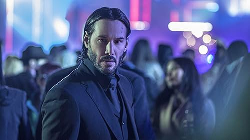

John Wick
Hitman

John Wick, the legendary hitman.
John Wick is a former assassin who goes on a killing spree after a mob boss's son kills his beloved dog.
Timeline
2001:
Retires from his career as an assassin.
2014:
Loses his wife to an illness.
2014:
Receives a puppy named Daisy as a posthumous gift from his wife.
2014:
Daisy is killed by Iosef Tarasov, son of a Russian mob boss.
2014:
Begins his quest for revenge against the Tarasov crime family.
2017:
Continues to face challenges and adversaries, further establishing his reputation as a feared assassin.
2019:
Forced back into the world of assassination after a bounty is placed on his head.
2021:
The High Table seeks to end John Wick's reign of vengeance.
More about John Wick